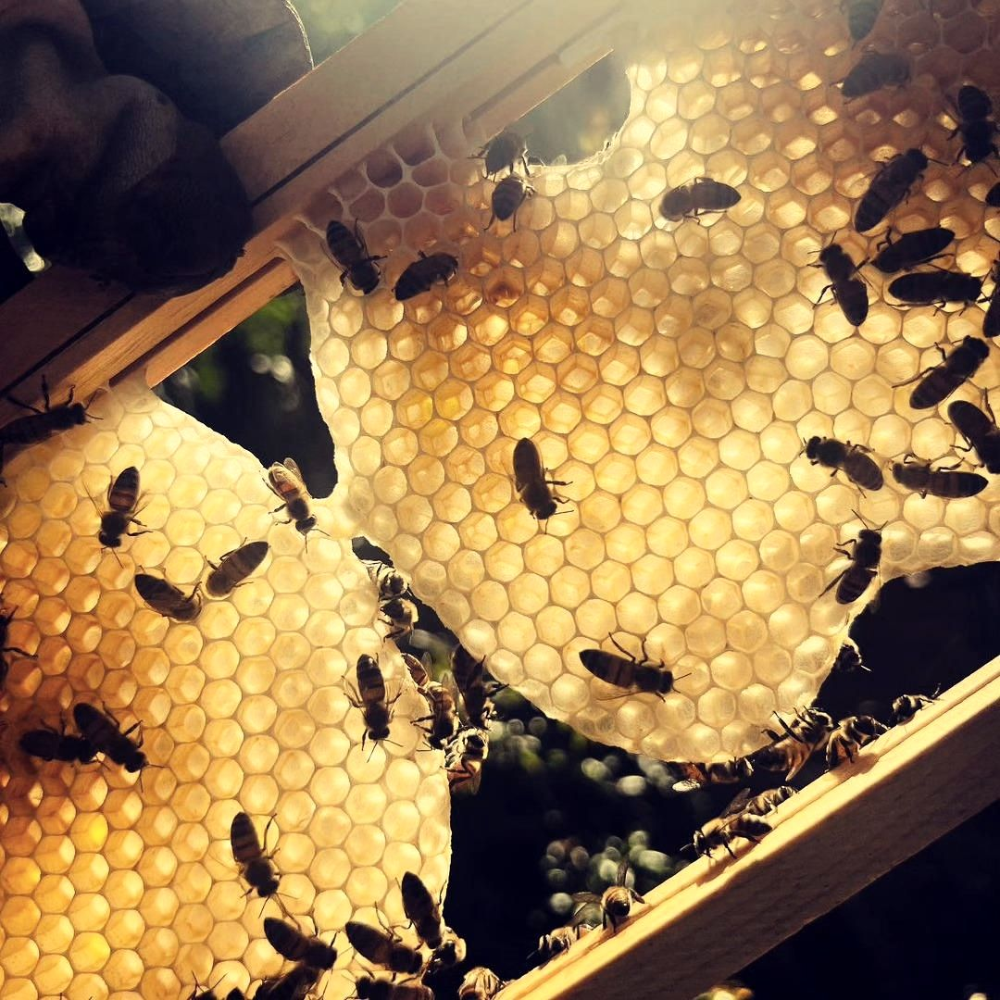

Рапс весной цветёт жёлтыми полями, и с него пчёлы приносят один из самых ранних мёдов сезона.
У нас на Кировоградщине его откачивают в конце мая или в начале июня, когда рядом посеян рапс.
Вкус деликатный, консистенция нежная, оттенок молочный. Он больше похож на крем, чем на классический мёд.
В рапсовом мёде много глюкозы, поэтому он кристаллизуется быстро, иногда за несколько дней, и становится белым и кремовым. Это нормальное свойство сорта, а не признак подделки. Подробнее в статье о кристаллизации.
Как и другой мёд, это источник быстрой энергии, антиоксидантов и ферментов, а нежный вкус хорошо подходит к чаю, выпечке и сыру. О составе мёда читайте на странице «Польза мёда».